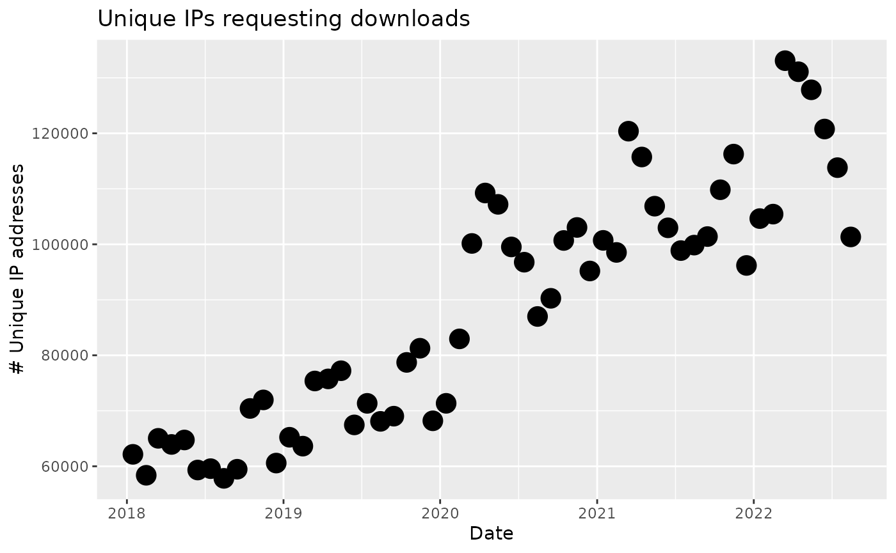

BiocReporting.RmdThis package collects tools for reporting open data about Bioconductor assets and distribution activities.
library(BiocReporting)
get_support_site_stats()## Bioconductor support site usage increments.
## From 2021/01/01 to 2021/12/31 :
## Users added: 3951; Top-level posts added: 2037
## Questions added: 1899; answers/comments added: 5230Relative to previous reports, this is more fine-grained.
pls = summarize_software_downloads()
pls$ipplot
ggplotly(pls$dlplot)